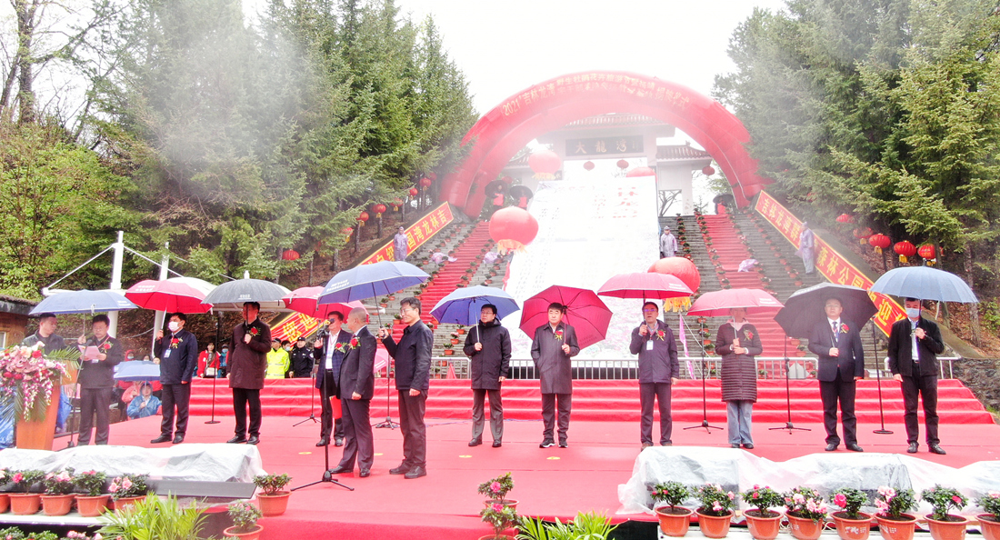
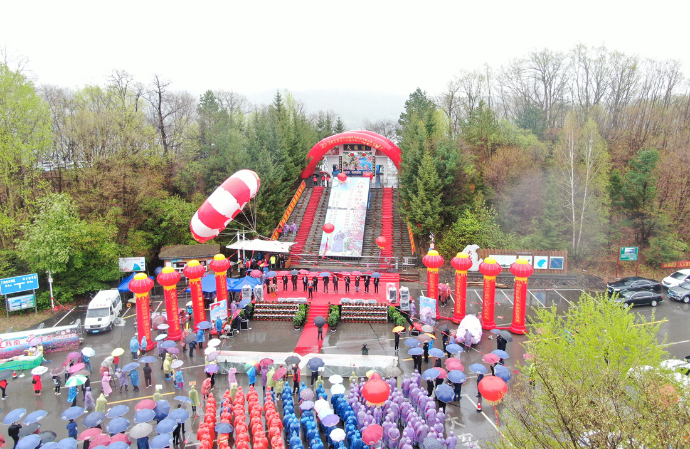
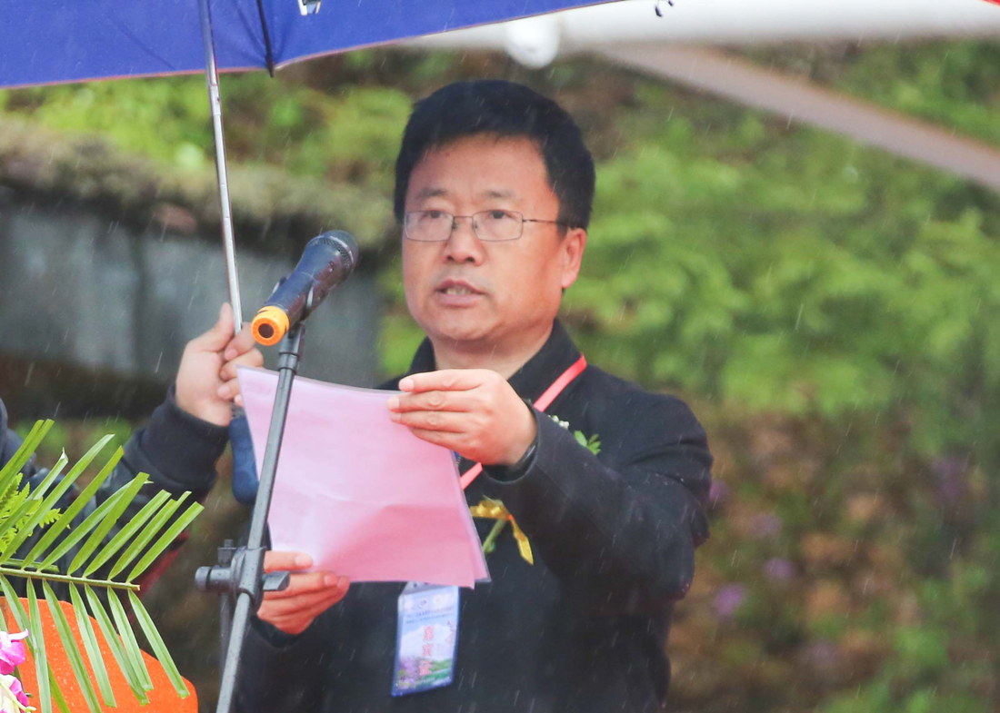

群山含黛，湖光潋滟，杜鹃盛放。5月8日，“2021’吉林龙湾野生杜鹃花卉旅游节”开幕式在吉林龙湾群国家森林公园大龙湾景区举行。
“吉林龙湾野生杜鹃花卉旅游节”已经连续举办了13届，成为吉林省重要的生态旅游主题节庆活动之一。本届龙湾野生杜鹃花卉旅游节的主题是“红色辉南、魅力龙湾”， 其主旨是充分利用和发掘红色文化资源，培育和推动龙湾红色旅游的发展，通过旅游节的举办将龙湾打造成弘扬抗联精神、传承红色基因的平台和阵地。本次活动的主办单位是：吉林省林业和草原局、吉林省文化和旅游厅、吉林省通化市人民政府。承办单位是：吉林省辉南县人民政府、吉林省辉南国有林保护中心。本届旅游节的举办时间为2021年5月。


吉林龙湾野生杜鹃花卉旅游节开幕式现场

祁永辉开幕式上讲话
吉林省政协副主席兰宏良宣布“2021’吉林龙湾野生杜鹃花卉旅游节”开幕。吉林省林业和草原局副局长祁永辉、吉林省通化市人民政府常务副市长经希军在开幕式上讲话。吉林省辉南国有林保护中心主任张吉顺主持开幕式。
开幕式上，还举行了“杨靖宇干部学院现场教学基地”揭牌仪式。这是对吉林龙湾红色旅游工作的认可，对于龙湾红色旅游建设与发展具有里程碑式的意义。近几年，在辉南县委、县政府的大力支持下，吉林龙湾现已建成“红色旅游教育体验馆”“金伯阳烈士纪念广场”“抗联路径”“抗联营地”等一大批缅怀革命先烈、弘扬奉献精神的爱国主义教育阵地，旅游产品结构不断丰富，弘扬抗联精神、传承红色基因，真正实现了“红色文化”和“生态旅游”的完美融合。
龙湾杜鹃花
旅游节期间举行多项活动。包括百人红歌大合唱、“红歌心向党，山莺进龙湾”山莺艺术团百人大合唱、“爱辉南、爱龙湾”抖音快手网红直播活动、龙湾风光摄影作品展、省内外旅行社和旅游企业的业务洽谈会等活动。
旅游节期间推出多项优惠措施。吉林省内国家级劳模免费入园、普通游客的四景区联票优惠价格为50元/人、旅行社的四景区联票优惠价格为40元/人、四方顶子景区和七色山花谷免费游览、开幕式当日大龙湾景区免费开放等多种优惠措施。同时，辉南县政府发放20万元旅游消费券支持龙湾旅游发展。
旅游节期间，龙湾有６处景区向游人开放。分别是三角龙湾景区、大龙湾景区、吊水壶景区、四方顶子景区、龙湾漂流景区、生态观光园等六处，涵盖了生态旅游、森林康养、红色教育、研学旅行、科研考察等诸多旅游要素。届时，野生杜鹃花迎寒怒放在险峰奇石里，云蒸霞蔚于青山绿水间，是春季龙湾一道最亮丽的风景线。在观赏野生杜鹃花的同时，游客还可以领略“船在湾中走，人在画中游”的三角龙湾风光，欣赏“一瀑秀水、满目青山”的吊水壶景色，登临素有“龙岗画苑”、“高山植物园”美誉的四方顶山，徜徉“争奇斗艳，灿若锦霞”的七色山花谷，重温“气势恢宏、可歌可泣”的东北抗联精神、体验“寓教于乐、寓学于趣”的科普宣教展馆。
吉林龙湾群国家森林公园位于吉林省通化市辉南县境内，总面积8102公顷，是一处集休闲度假、森林康养、红色教育、研学旅行、科研考察于一体的国家4A级生态旅游景区。龙湾被地质专家们誉为：“中国空间密度最大的火山口湖群”和“世界最典型的玛珥湖群”，获得“全国科普教育基地”“全国摄影创作基地”“吉林省爱国主义教育基地”“吉林省知名品牌”“全国文明单位”等荣誉称号，并成功入选“IUCN(世界自然保护联盟)生态保护地绿色名录”。
吉林省辉南国有林保护中心主任张吉顺介绍说：“龙湾的发展始终坚持‘绿水青山就是金山银山’的发展理念，秉持“生态主导、保护优先、科学谋划、持续发展”的原则，以森林生态旅游事业为突破口，遵循保护生态环境、传承龙湾文化、创新机制发展、造福龙湾百姓的宗旨目标，不断在旅游基础设施建设、旅游服务功能提升、整合文化和生态旅游资源等方面迈出新步伐，走出了一条生态保护、文旅融合、民生普惠的绿色发展之路。”
龙湾杜鹃花